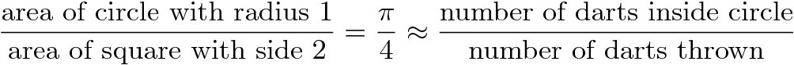
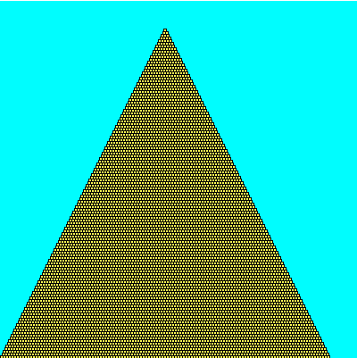

The purpose of this lab is to:
- Introduce basic graphics
- Practice loops using graphics
- Practice using conditionals (if-statements)
Before you begin, please create a folder called lab03 inside your cs150 folder (for a refresher, here's how you did this on lab 02). This is where you should put all files made for this lab.
Part 1 - Monte Carlo!
monte.py: 12 points, individual
You probably remember bumping into that peculiar number Π = 3.14159265..., right? It comes up when you're talking about circles and trigonometry, but also appears in a bunch unexpected places that seem to have little to do with either. As a refresher, Pi can be defined as the ratio of a circle's circumference (Π d) to its diameter (d). One interesting feature of Pi is that it's an irrational number, meaning it cannot be expressed as a fraction m/n where both m and n are integers; consequently, its decimal representation never ends or even repeats.
Since ancient times, mathematicians have been fascinated with the study of Pi and it's various properties. Early approximations of Pi, such as 22/7 and 355/113 were accurate to 3 and 7 digits repsectively (the latter approximation was the best known for nearly a millenium). Currently, more than the first trillion (a million million) digits are known. There are many ways to estimate Pi -- for example, you could draw as precise a circle as you can manage, measure its circumference C and diameter d, and then divide C/d; this should give you Pi. Alternatively, there is a geometry-based approach due to Archimedes. We'll investigate a third approach using what is called a Monte Carlo method.
Monte Carlo Method
When we say we're using a Monte Carlo method, we usually mean we're going to do a bunch of random trials and observe the fraction of those trials that have a certain property. In our case, we're going to be throwing darts into a square region, and computing the fraction of those darts that land within a circle inscribed inside that square. Each throw is a trial, and the property we are concerned with is whether or not the dart landed inside the circle or not.
Describe the Problem:
Write a program called monte.py that computes an approximate value of Pi.
input: get a number of trials n from the user.
goal: compute and output an approximation to Pi using a Monte Carlo method with n trials.
Understand the Problem:
More precisely, we'll begin by (theoretically) constructing a target circle inscribed in a square. This is our dart board, and the target circle reaches all the way to the edge of the square. It might look something like the following:

Next, we'll simulate repeatedly throwing darts at random against the board above (we'll assume that our random throws alway hits the square, and are equally likely to land at any given point inside the square). We then look at the fraction of the darts that land within the circle out of all those that were thrown. I claim that if we then multiply this fraction by 4, we should have a good approximation to Pi. What sort of dark sorcery is this? Let's take a closer look.
The area of a square is the length of a side squared. Thus our square, with sides of length 2, has an area of 4. The area of a circle is Pi times the radius squared, so for a unit circle (with radius 1), the area is Pi. Therefore, the ratio of the area of our circle to the area of our square is precisely Pi/4. (That is, the circle takes up a Pi/4 portion of our dart board.)
Since each dart lands at a random location in the square, the probability that any one dart lands within the circle should be exactly the fraction of the square taken up by the circle: Pi/4. Thus, if we repeat this experiment over and over again, we'd expect roughly a Pi/4 fraction of the darts to land in the circle. By counting up the fraction that actually land in the circle in our experiments, we've gotten a probabilistic estimate for Pi/4, or a quarter of Pi. If we just multiply that estimate by 4, we've got our approximation for Pi itself. Restating our discussion as a formula, we have

That is, if you throw lots of darts and keep track of the fraction that land inside the circle, multiplying this fraction by 4 should give you an approximate value for Pi. Of course, it is only an approximation: suppose (by some cosmic fluke) that all the darts thrown land near the upper left corner, outside of the circle. Then your approximation for Pi would be 0 (a rather weak estimate). However, as the number of trials increases, the likelihood that your estimate is good increases as well.
A run of the program might appear as follows.
Sample Output
% python3.2 monte.pi
This program calculates the value of Pi by
simulating the throwing of darts onto a round
target on a square background.
How many darts to throw? 1
The value of Pi after 1 iterations is 4.0
which is off by 27.32%
% python3.2 monte.pi
This program calculates the value of Pi by
simulating the throwing of darts onto a round
target on a square background.
How many darts to throw? 100
The value of Pi after 100 iterations is 2.96
which is off by 5.78%
% python3.2 monte.pi
This program calculates the value of Pi by
simulating the throwing of darts onto a round
target on a square background.
How many darts to throw? 1000
The value of Pi after 1000 iterations is 3.084
which is off by 1.83%
Design an Algorithm:
Write pseudocode to approximate Pi via this dart-throwing method--you'll throw random darts at a 2-by-2 board, and calculate what fraction end up within the unit circle. Try this on your own, and then confirm that your pseudocode looks something like the following:
- Prompt the user for the number of darts n they want to throw.
- Initialize a variable hits to 0. This variable keeps track of how many of the n darts actually land within the target circle.
- for n iterations
- throw a single random dart onto our board
- if the dart lands within the circle, increment hits
- Calculate the fraction of the n darts that landed within the target, that is, hits/n, and from this calculate the approximation to Pi as 4*hits/n.
Implement a Design:
Translate your pseudocode into a Python program named monte.py.
In order to implement your pseudocode, you'll need to "throw a dart." Each dart's position is specified by an (x,y) coordinate, so to "throw" a dart, you just need to randomly generate two values for each dart throw (one for x and one for y).
Generating random numbers / Throwing random darts
Python has a module that will let you generate random numbers called random. To use it you need to:
- At the top of your file, under your comments, add the line
import random - You can get a random integer between 0 and 99 (inclusive) with the following call
rInt = random.randrange(100) # returns an integer in [0,99]Another way to get the same result is with the following call:rInt = random.randint(0,99)If you'd like a random float between 0.0 and 1.0 (exclusive) you can do:rFloat = random.random() # returns a float in [0.0, 1.0)
If you'd like that random float to be between 0.0 and 1.0 (INclusive) you can do:
- In order to generate a random float between -1 and 1 (which you'll do for each of the x- and y-coordinates of each dart throw), do the following.
randX = random.uniform(-1.0, 1.0) # randX is between -1.0 and 1.0
rFloat = random.uniform(0.0, 1.0) # returns a float in [0.0, 1.0]
Now that you have your dart throw, your next question should be: how do I know if I've hit the target? You'll do this by calculating the distance from the center of the circle to the dart and determining if it is within 1 unit and therefore in the circle. If you center the circle at the origin (0,0) and generate x and y values ranging from -1 to 1, you can just use the distance formula to calculate the distance from (x,y) to the origin:
In Python, this formula is math.sqrt(x*x + y*y).
Math functions
You can use the math module to do more advanced arithmetic operations and to give you a decent value of Pi. In particular, math.sqrt(exp) will return the square root of the expression exp, and math.pi is a constant representing the value of Pi. See the online documentation for more details, if you need them. You will need to import this module at the top of your file, using import math.
Now in your main function's for loop, you can check whether this function returns a value less than or equal to 1 using an if statement.
You do not have to calculate the percentage difference between your approximation and Python's math.pi, but it might be interesting to look at.
Test the Program:
Try running your program with an increasing number of trials. Ideally, the more trials you have, the closer to the real value of Pi you get.
You should expect that
each run produces a slightly different value due to the fact that it is
using a random number generator.
Handin:
Just another reminder to run the handin command to hand in your files.
Part 2 - Walk Like an Egyptian
pyramid.py: 16 points, partner
Describe the Problem:
Write a program called pyramid.py that draws a pyramid of bricks based on user input.
input: get a numbers width from the user, as well as the number of bricks tall to make the pyramid (n).
goal: draw a pyramid that is n bricks tall in a square canvas width wide (and thus width tall).
Understand the Problem:
Here are three sample outputs for your reference. Notice that the pyramid doesn't necessarily fill the entire canvas to the right and to the top; if the canvas width is not evenly divisible by the number of bricks, then there will be extra blank space. (A question for you to ponder: why is there so much blank space in the third example? Seems like you could fit lots of extra bricks both to the right and up top...)

400 x 400, 17 bricks.

400 x 400, 123 bricks.

Design an Algorithm:
Write pseudocode to draw the appropriate pyramid. The algorithm is
- Prompt the user for the width width of the canvas.
- Prompt the user for the number of bricks tall to make the pyramid, n.
- Setup a canvas of size width by width with a cyan background.
- Start building the pyramid in the bottom left corner of the canvas. This is the tricky part so we will walk you through it. Very broadly, the algorithm to draw the actual pyramid is:
For each row i of the pyramid
- Draw row i of the pyramid
Of course, this leaves a lot of details out! The first question you should answer is "How many rows are there in the pyramid?" Hopefully it is clear that the answer here is n.
So we can rewrite the algorithm as:
For each row i from 0 to n-1 do
- Draw row i of the pyramid
But drawing row i of the pyramid is a whole algorithm in itself. In order to draw row i of the pyramid, we need to answer the following questions (which you answered on your prelab):- How many bricks does the ith row have (given that the 0th row has n bricks and the (n-1)st row has 1)? That is, numBricksi = ??? Write down your answer.
- What is the side length s of each brick in terms of width and n? That is, s = ??? Write down your answer.
If we take another look at our pseudocode, it would look like this:
For each row i from 0 to n-1 do
- Draw row i of the pyramid as follows
- Draw numBricksi bricks, each with side length s
If we were to implement this pseudocode, we would see that all the rows would be squished up against the left-hand side of the canvas... that is, we haven't taken into account that each row itself starts a little bit further to the right than the row below it. Thus, our next questions (which you answered on your prelab):- What is the x-coordinate of the first brick of row i in terms of s and i (given that the 0th row starts at x-coord 0)? That is, startX = ??? Write down your answer.
- What is the y-coordinate of the first brick of row i in terms of s and i (given that the 0th row starts at y-coord width - s)? That is, startY = ??? Write down your answer.
For each row i from 0 to n-1 do
- Draw row i of the pyramid as follows
- Draw numBricksi bricks, each with side length s
- Each brick should have y-coordinate startY
- The first brick should have x-coordinate startX and each subsequent brick should be offset by s from the previous
- Draw row i of the pyramid
Implement a Design:
Now that you have a detailed algorithm in pseudocode, translate it (bit by bit!) into a Python program named pyramid.py. Although your final program should get the width and number of bricks from the user, you may want to temporarily hard-code this values into your program (using the example values above, perhaps) for now because it will make testing easier for now.
Using the picture module
We have provided you with a module picture that lets you draw pictures. To use it you need to:
- Download or copy the picture module into your current working directory (in this case, your lab03 directory).
- Before your main declaration, add the line
import picture - To get started, you need to declare and initialize a new picture object using a constructor function as follows:
canvas = picture.Picture(600, 800)This creates a new picture object called canvas which you'll be able to draw upon and display. The parameters specify the width and height of the canvas. Naturally, you can use other values if needed. -
At any given time, picture object keeps track of an outline color (lines and edges of shapes) and a fill color (the inside of shapes). The default values of these parameters are black and white, respectively.
To change the color of the lines, you'd use the setOutlineColor function, as follows:
canvas.setOutlineColor(r, g, b)Here r is an expression indicating how much red the pen color should have (from 0 to 255). Similarly, g and b indicate how much green and blue are in the pen color. Some useful (r,g,b) values: (255, 255, 0) is yellow, (0, 0, 0) is black, and (0, 255, 255) is cyan.
The function to set the fill color is what you might expect:
canvas.setFillColor(r, g, b) -
You'll also want to use the drawRect and drawRectFill function to draw rectangles and filled rectangles. For example,
canvas.drawRectFill(x, y, w, h)would draw a filled rectangle in the current pen color. The rectangle would be w pixels wide and h pixels tall. The upper left corner of the rectangle would be located at position (x,y). (Recall that the picture coordinate system, (0,0) is the upper left pixel.)
-
To actually display the picture, you'll need to use the display() function after you've created the image. So you'd write
canvas.display()As you may recall from class, the picture window will close as soon as your program ends, so if you want to be able to admire your creation, you'll need to force the program to wait. The easiest way to do this is by ending your program with an input statement:
input()Now when you run your program, it will open the picture window and keep it open until you press enter.
Implementation notes:
- All the bricks you draw should be exactly the same size. While you can pass floats to various picture functions, including drawRectFill, in the end these values end up being rounded to integers (since all pixels have integer coordinates). To ensure your bricks are placed exactly as you intend, you may wish to do the rounding yourself.
- On a related note, sometimes the brick size length won't divide evenly into the canvas size. In these cases, you will have gaps either to the right or to the top of the pyramid. This is okay. However, you should not have gaps to the left or on the bottom of the pyramid. Always start at the bottom left, putting the next brick right next to the previous one and right on top of the previous layer.
- A hint on changing the background color: there is no way to actually change the color of the canvas, so to get that nice blue background, you will need to draw a big rectangle the same size as the canvas, with its x,y coordinates set to 0,0.
Test the Program:
Try running the program with the examples given above as well as some others. Make sure you have gaps where you ought to, and that there aren't gaps where there shouldn't be gaps! Your pyramid should not be sloping to one side or floating in the middle. You shouldn't have some bricks that are larger than others. If it looks fishy, go back and examine your math equations, checking that the "integer division" is being used appropriately.
And don't forget to let the user input the width and number of bricks, if you were testing the program with hard-coded values!
Handin:
Please handin your lab up to this point so that we have some portion of your code submitted.
Part 3 - Primes
primes.py: 12 points, partner
As you may know, a number x is said to be prime if x is at least 2, and the only proper factors of x are itself and 1. So the first few primes are 2, 3, 5, 7, 11, 13, 17, 19, 23, etc. 4 isn't prime, since it is divisible by 2. Same goes for 6 and 8. 9 is out thanks to 3. And so on. There are a lot of primes. More precisely, there are infinitely many primes. This can actually be shown pretty easily; ask if you're curious.
A twin prime is a pair of prime numbers that differ by exactly 2. So (3,5), (5,7), (11,13), (17,19) and (29, 31) are all twin primes. Note that not every prime is part of a twin prime. It is conjectured that there are infinitely many twin primes too, but no one knows for sure.
Describe the Problem:
Write a program called primes.py that prints out some number of primes and the number of twin primes amongst them.
input: get a number n from the user that represents the number of primes to print out.
output: output the first n primes, and the number of twin primes amongst these n.
Understand the Problem:
If the user enters 13 then the output should be
The first 13 primes are: 2 3 5 7 11 13 17 19 23 29 31 37 41 Amongst these there are 5 twin primes.
Note that (41, 43) is a twin prime, but we didn't count it since 43 wasn't amongst the first 13 primes.
Design an Algorithm:
Write pseudocode to solve this problem. You should decompose your main algorithm into small manageable chunks. For example, you should
- design an algorithm that takes in an integer x and determines whether x is prime. For example, it would return false if x is 10, while it would return true if x is 31. You did this on your prelab.
- use this algorithm to generate the first n primes.
Implement a Design:
You may want to use a while loop as you search for primes, since you won't know ahead of time just how far you need to go. Ask if you're not sure what a while loop is, or feel free to google it.
Test the Program:
Try your program with a variety of inputs n. Certainly you should try n=0,1,13 but you should also try n=14 to get that one extra twin prime, as well as others!
Handin:
Please handin what you have of your lab so far.
Handin
If you followed the Honor Code in this assignment, insert a paragraph attesting to the fact within one of your .py files.
I affirm that I have adhered to the Honor Code in this assignment.
You now just need to electronically handin all your files. As a reminder
% cd # changes to your home directory
% cd cs150 # goes to your cs150 folder
% handin # starts the handin program
# class is 150
# assignment is 3
# file/directory is lab03
% lshand # should show that you've handed in something
You can also specify the options to handin from the command line
% cd ~/cs150 # goes to your cs150 folder
% handin -c 150 -a 3 lab03
File Checklist
You should have submitted the following files:
monte.py pyramid.py primes.py picture.py (you needn't have touched this, it just makes grading easier)
If you worked with a partner, one of you will turn pyramid.py and primes.py, and the other will turn in a README files with their name.
A. Sharp, T. Wexler, B. Kuperman, M. Davis, S. Zheng, C. Taylor